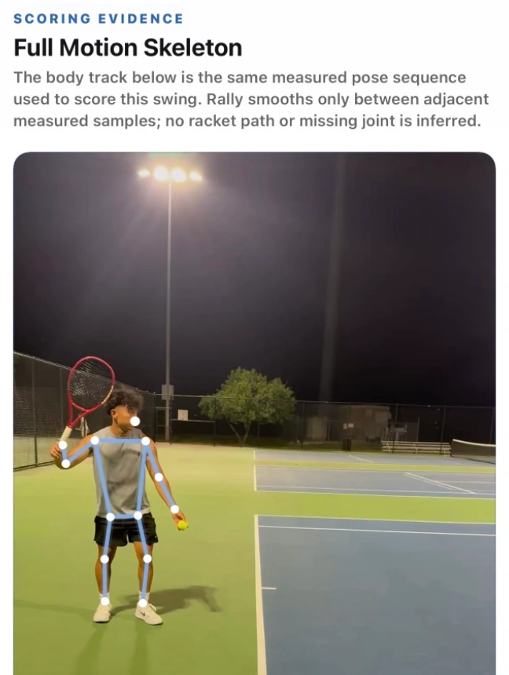
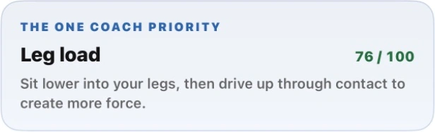
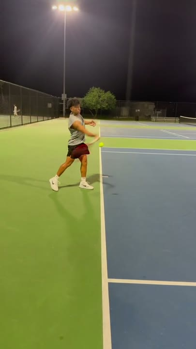

Log every session
Save practices, matches, and lessons with the date and time you played.


Log your time on court, see your progress, and turn a swing video into one clear thing to practice.
Download on the

Keep your sessions and progress together, from week to week.
Save practices, matches, and lessons with the date and time you played.
Track court time, sessions, and days played together in your tennis journal.
Start, pause, and end a tennis workout on Apple Watch. Bring it into Rally with optional Apple Health access.
Review your movement and get one coaching cue to work on with Rally Pro.
See a swing example
See how Rally turns a forehand clip into one thing to work on at your next practice.

Walkthrough example. Swing analysis requires Rally Pro and supports forehands, two-handed backhands, and serves.
From the first ball to the last note in your journal.

Record a video in Rally or choose one from your iPhone. Follow the in-app filming guidance for your selected stroke. Rally checks capture quality; clips that are unsuitable for analysis may be declined.
Swing analysis supports forehands, two-handed backhands, and serves.
Rally runs on iPhone with iOS 17 or later. Swing analysis needs an internet connection. An optional Apple Watch companion requires watchOS 10 or later; you do not need a Watch to analyze a swing.
New swing analyses and analysis-video exports require Rally Pro. Monthly and annual subscriptions renew automatically unless canceled. Your free tennis journal and saved analysis results remain accessible after Pro expires. Review the price, trial eligibility, and billing terms in the app before purchase.
For swing analysis, Rally removes audio on your iPhone, then uploads the clip for server processing. Saved swing history is stored on your iPhone. Standalone local video modes have different handling. See the Privacy Policy for processing, retention, and deletion details.
Rally is for adults 18 and older who want a clearer focus for tennis practice. It is a practice tool, not a replacement for an in-person coach. Results can be imperfect, and low-confidence or unsuitable clips are labeled or declined.
Start a free tennis journal and see the time you’re putting into your game.
Download on the